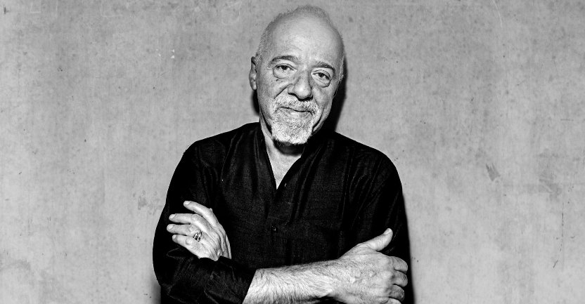

Paulo Coelho

Paulo Coelho
Paulo Coelho is well author particularly after the popular book "The Alchemist" which sold over 35 million copies. Paulo Coelho has published many books since, not only is he a great author but he also participates in charity work.
Notable books by Paulo Coelho
- The Alchemist
- Pilgrimage
- Warrior of the Light: A Manual
- Manuscript Found in Accra
- The Witch of Portobello: A Novel
Paulo Coelho has been awarded many awards throughout his career. Here are some of his many accomplishments:
- Hans Christian Andersen Award, Denmark, 2007
- DirectGroup International Author Award, Germany, 2005
- Order of Honour of Ukraine, Ukraine, 2004
- Knight of Arts and Letters, France, 1996
To find out more about Paulo's accomplishments please visit: Paulo's Portfolio
If you wish to know more about the work of the author please visit: Paulo's Personal Page